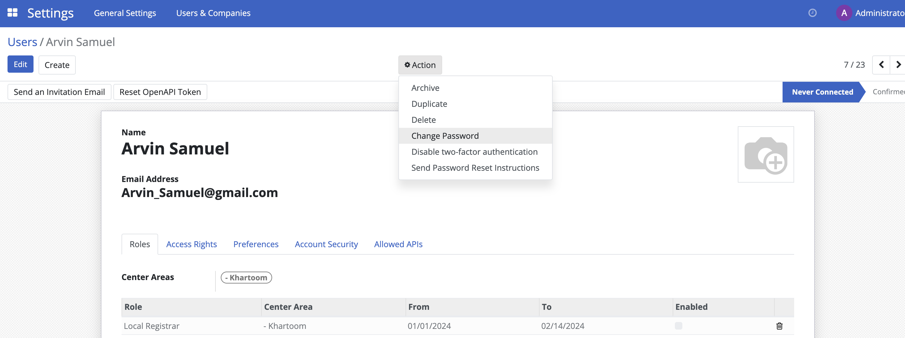
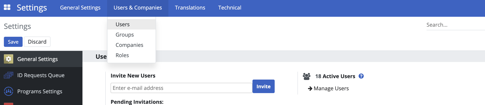
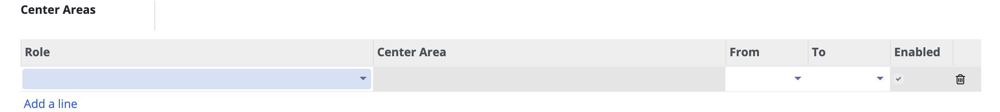
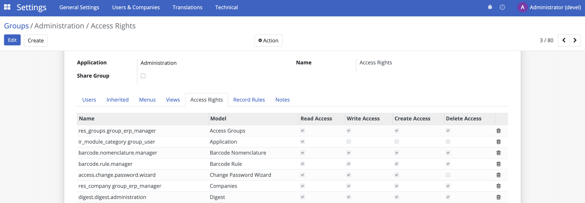

Administrating role-based access
Contents
Administrating role-based access#
Introduction#
This tutorial explains how to configure role-based access in OpenSPP so that users have the required permissions to perform their tasks. As the system or requirements change, it is essential to update roles and permissions systematically. Additionally, ongoing training and support are vital to ensure users understand their roles and responsibilities for secure and efficient operation.
Prerequisites#
To grant access, you need a user account with the System Admin role given by the OpenSPP team.
Objective#
After completing this tutorial, you will gain an understanding of how to manage role-based access in OpenSPP and learn the necessary steps to assign, update, or revoke user permissions.
Process#
All user-related tasks, such as creating new users, modifying existing users, configuring their information, passwords, and user roles, are performed on the User page.
The Users page is accessed by clicking on the four-square icon in the top-left corner and select Settings.

Click on Users & Companies and you will see the Users, Companies, and Roles options.

Creating user account#
User roles can only be assigned to existing user accounts. To create user accounts, click on the four-square icon in the top-left corner, then choose Settings. Click on Users & Companies and select Users. Click on the Create button, fill in the user's name and email address, and then click Save. The password will need to be added or changed as described in the Change User Password section below.
Change user password#
Click on the four-square icon in the top-left corner, then select Settings. Click Users & Companies then click Users from the dropdown list. Click on the user account that should be modified, and then click on the Action button.

Click on Change Password in the action list, enter the new password in the New Password field, and then click the Change Password button. The password is now successfully updated.

Enabling and disabling user account#
To maintain proper security, it is important to ensure that users who should no longer have access to the system are taken out of active use.
All such actions are taken from the Users section. Click on the four-square icon in the top-left corner, then select Settings, click Users & Companies, and then click Users. Click on the name of the user you wish to manage, then click the Action button, where you will find the different options listed below.
Delete#
To completely delete the user account from OpenSPP, click on Delete in the action list. A confirmation popup will appear. Click Ok to proceed. Note that this permanently deletes the user account and that this may also have an effect on traceability.
Archive#
To temporarily delete the user account from OpenSPP, click on Archive in the action list. A confirmation popup will appear. Click Ok to proceed. Note that this only removes the user’s access to the system, but that the account still exists in the system.
Unarchive#
To restore a temporarily deleted user account to OpenSPP, it is performed in a similar way as the archive. Since the user account will no longer be displayed among the active users, additional steps need to be performed to navigate to the user.
Navigate to the Users page, click on Filters, then click Inactive Users. This displays all user accounts that have been temporarily deleted or archived. Click on the name of the user account you wish to unarchive. Click on the Action button, and then click Unarchive.

Navigate back to the Users page. Clear the Inactive Users filter by clicking the x icon. The unarchived user account should now be visible along with all users accounts.

Editing user Information#
The editable user information is Name and Email Address. Click on the four-square icon in the top-left corner, then click on Settings, navigate to Users & Companies and select Users.
Click on the name of the user you wish to edit. Click on Edit to modify the name and email address fields. Click on Save to proceed with the changes.

Assigning roles to a user#
Assigning a role to a user account enables them to perform a specific set of actions in OpenSPP. For instance, only a System admin role has the permission to import and export data in and out of OpenSPP. Therefore, it is important to assign specific roles, particularly to the user account’s purpose. This also prevents unauthorized access to sensitive data, which may be easily mishandled.
Click on the four-square icon in the top-left corner then choose on Settings. Click Users & Companies and select Users.

Click on the name of the user account you wish to assign roles to. In the Roles tab click Add a line. Use the dropdown menu to select the appropriate role for the user. Depending on the role selected, the behavior of the Center area tab will vary. Roles can be either Global or Local. A Global role grants access to all geographical areas, while a Local role allows the option to restrict which geographical areas the user can access. If the assigned role is Local the column Center Area will be enabled, allowing the selection of one center area. If left blank, the role will act as Global. It is possible to assign multiple roles to a user.

Configure the From and To columns. From defines when this user can start having the selected access role, while To defines when it will expire. To remove the role from the user, simply click on the trash icon. Click on the Save button once done.

Configuring roles#
Roles are typically pre-configured and available for selection; however, you can also create and configure them yourself. To create a new role click on the four-square icon in the top-left corner, click on Settings then select Roles under Users & Companies. A list of roles is displayed on the Roles page.
Click Create, set a name for the role, and select a Role Type. Roles Types can be either Global or Local. A Global role grants access to all geographical areas, while a Local role allows the option to restrict which geographical areas the user can access.

Under the Groups tab, click Add a line and tick the checkbox beside the group(s) you wish to add for this role. Click Select to save the selection.
Navigate back to the Roles page by clicking Roles under Users & Companies. The new role is displayed in the list.

It is also possible to view all user accounts associated with a role. In the Roles page, click a role from the list and click on the Users tab.

You can assign users to the selected role by clicking Add a line and selecting the user you wish to associate the role with. Click on the trash icon to unlink the user account from the role.
Configuring groups#
The list of access rights for a group is typically pre-configured; however, you may also modify the list of access rights associated with a group. To access the Groups page, the Developer mode must first be activated. This is done by navigating to Settings, scrolling down to the last part of the page, and clicking Activate the developer mode. You will then be automatically redirected back to the Registry page.

Go back to Settings. Click on Users & Companies where the option Groups should now be displayed.

Click Groups to be redirected to the group's page. You may create new groups by clicking the Create button, or you can manage existing groups by clicking the checkbox beside each group and then clicking the Action button, or you can modify groups by clicking on a group’s name.
Access rights for each group can be modified on the Access Rights tab. Access rights can be modified to determine their permissions. Click Edit to modify checkboxes or delete access rights, then click Save to apply changes.

Deactivate developer mode by clicking on the four-square icon and then click on Settings, scrolling down to the last part of the page, and clicking Deactivate the developer mode.